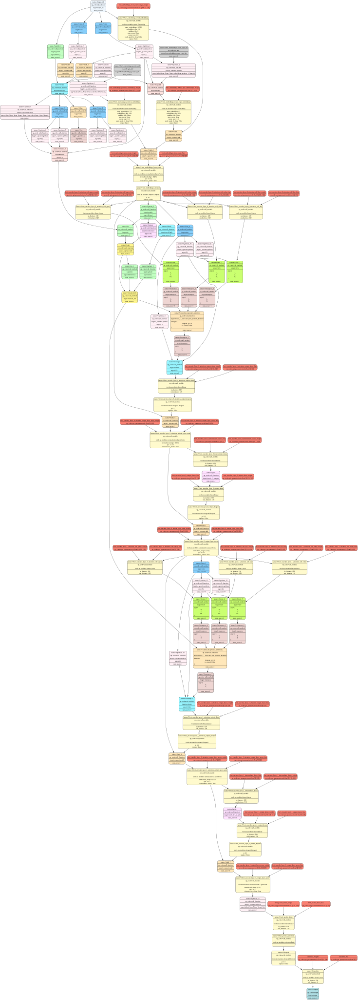

Tutorial 1: Introduction to the Mase IR, MaseGraph and Torch FX passes#
In this tutorial, you will import a pretrained model into MASE by generating a compute graph through
MaseGraph, then run analysis and transform passes on top of that graph. The end-to-end flow matches
the old notebook version but is now optimized for script-based execution and maintenance.
Run this tutorial#
From the repository root:
uv run python docs/source/modules/documentation/tutorials/tutorial_1_introduction_to_mase.py
What this tutorial covers#
Load a pretrained
bert-tinysequence classification model from HuggingFace.Build and inspect an FX graph through
MaseGraph.Raise graph metadata with analysis passes.
Write and run a custom analysis pass (count dropout nodes).
Write and run a custom transform pass (remove dropout nodes).
Export and reload the transformed
MaseGraphcheckpoint.
Expected terminal output (excerpt)#
The script prints progress markers for each step. A successful run should contain output similar to:
============================================================
Tutorial 1: Introduction to MaseGraph & FX passes
============================================================
[1/6] Loading pretrained bert-tiny from HuggingFace...
Model loaded. Parameters: 4,386,178
[2/6] Building MaseGraph and drawing SVG...
Graph saved to .../docs/source/modules/documentation/tutorials/bert-base-uncased.svg
FX node type sanity check passed.
[3/6] Running metadata analysis passes...
Metadata analysis passes completed ✓
[4/6] Running count_dropout_analysis_pass...
INFO Found dropout module: bert.embeddings.dropout
INFO Found dropout module: bert.encoder.layer.0.attention.output.dropout
INFO Found dropout module: bert.encoder.layer.0.output.dropout
INFO Found dropout module: bert.encoder.layer.1.attention.output.dropout
INFO Found dropout module: bert.encoder.layer.1.output.dropout
INFO Found dropout module: dropout
Dropout count: 6
[5/6] Running remove_dropout_transform_pass...
INFO Removing dropout module: bert.embeddings.dropout
INFO Removing dropout module: bert.encoder.layer.0.attention.output.dropout
INFO Removing dropout module: bert.encoder.layer.0.output.dropout
INFO Removing dropout module: bert.encoder.layer.1.attention.output.dropout
INFO Removing dropout module: bert.encoder.layer.1.output.dropout
INFO Removing dropout module: dropout
Verified: 0 dropout nodes remain ✓
[6/6] Exporting MaseGraph checkpoint...
INFO Exporting MaseGraph to .../tutorial_1.pt, .../tutorial_1.mz
Exported to .../tutorial_1
Reloaded from checkpoint ✓
============================================================
Tutorial 1 complete!
============================================================
Note
During step [3/6], some environments print large tensor dumps from underlying libraries.
This is expected and can be ignored as long as the run reaches Tutorial 1 complete!.
Generate an FX graph for the model#
To import a model into MASE, you first need a computation graph representation. MASE uses Torch FX, which provides a high-level graph that is easy to inspect and transform from Python.
When you construct MaseGraph(model), symbolic tracing records model operations and builds an FX graph.
The script writes a graph visualization to bert-base-uncased.svg in the tutorial script directory.
FX graph node types quick primer#
FX graphs include six core node types:
placeholder: function input node.get_attr: reads module attributes/parameters.call_function: calls a free function.call_module: calls atorch.nn.Modulein the module hierarchy.call_method: calls a method on a value (for example a tensor method).output: return node of the graph.
The script includes a short ReLU sanity check to show how one operation can appear as function/method/module forms with equivalent outputs.
Inspect the generated graph#
The full graph generated by the script is shown below.
{kind=link}

FX graph generated from prajjwal1/bert-tiny in Tutorial 1.#
Use this graph to identify module boundaries and operation flow. A useful exercise is to locate attention subgraphs and compare them with the corresponding HuggingFace BERT implementation.
Understanding the Mase IR#
MASE IR is built on top of Torch FX. FX captures executable graph structure, while MASE adds domain-specific metadata and pass infrastructure used by MASE optimization workflows.
In this tutorial, the key transition step is running metadata analysis passes so each node gets the metadata required by downstream passes.
Understanding the pass system#
A pass is a function that iterates over graph nodes and returns:
the updated graph
a
pass_outputsdictionary
Both analysis and transform passes follow the same callable contract, which allows pass chaining.
def dummy_pass(mg, pass_args={}):
pass_outputs = {}
for node in mg.fx_graph.nodes:
# do something
...
return mg, pass_outputs
Step 1: Load a pretrained model#
print("\n[1/6] Loading pretrained bert-tiny from HuggingFace...", flush=True)
model = AutoModelForSequenceClassification.from_pretrained("prajjwal1/bert-tiny")
print(
f" Model loaded. Parameters: {sum(p.numel() for p in model.parameters()):,}",
flush=True,
)
Step 2: Build the FX graph#
print("\n[2/6] Building MaseGraph and drawing SVG...", flush=True)
mg = MaseGraph(model)
script_dir = Path(__file__).resolve().parent
graph_path = script_dir / "bert-base-uncased.svg"
mg.draw(str(graph_path))
print(f" Graph saved to {graph_path}", flush=True)
random_tensor = torch.randn(2, 2)
assert torch.equal(torch.relu(random_tensor), random_tensor.relu())
assert torch.equal(torch.relu(random_tensor), torch.nn.ReLU()(random_tensor))
print(" FX node type sanity check passed.", flush=True)
Step 3: Raise FX graph to Mase IR#
print("\n[3/6] Running metadata analysis passes...", flush=True)
tokenizer = AutoTokenizer.from_pretrained("bert-base-uncased")
dummy_input = tokenizer(
[
"AI may take over the world one day",
"This is why you should learn ADLS",
],
return_tensors="pt",
)
mg, _ = passes.init_metadata_analysis_pass(mg)
mg, _ = passes.add_common_metadata_analysis_pass(
mg,
pass_args={"dummy_in": dummy_input, "add_value": False},
)
print(" Metadata analysis passes completed ✓", flush=True)
Step 4: Write and run an analysis pass#
def count_dropout_analysis_pass(mg, logger, pass_args={}):
"""Count dropout modules in a graph."""
del pass_args
dropout_modules = 0
for node in mg.fx_graph.nodes:
if node.op == "call_module" and "dropout" in node.target:
logger.info("Found dropout module: %s", node.target)
dropout_modules += 1
return mg, {"dropout_count": dropout_modules}
print("\n[4/6] Running count_dropout_analysis_pass...", flush=True)
logger = get_logger("mase_logger")
logger.setLevel("INFO")
mg, pass_out = count_dropout_analysis_pass(mg, logger)
print(f" Dropout count: {pass_out['dropout_count']}", flush=True)
Step 5: Write and run a transform pass#
def remove_dropout_transform_pass(mg, logger, pass_args={}):
"""Remove dropout nodes from a graph."""
del pass_args
for node in list(mg.fx_graph.nodes):
if node.op == "call_module" and "dropout" in node.target:
logger.info("Removing dropout module: %s", node.target)
parent_node = node.args[0]
node.replace_all_uses_with(parent_node)
mg.fx_graph.erase_node(node)
return mg, {}
print("\n[5/6] Running remove_dropout_transform_pass...", flush=True)
mg, _ = remove_dropout_transform_pass(mg, logger)
mg, pass_out = count_dropout_analysis_pass(mg, logger)
assert pass_out["dropout_count"] == 0
print(" Verified: 0 dropout nodes remain ✓", flush=True)
Step 6: Export and reload MaseGraph#
print("\n[6/6] Exporting MaseGraph checkpoint...", flush=True)
export_dir = f"{Path.home()}/tutorial_1"
mg.export(export_dir)
print(f" Exported to {export_dir}", flush=True)
_ = MaseGraph.from_checkpoint(export_dir)
print(" Reloaded from checkpoint ✓", flush=True)
In this transform pass, dropout nodes are removed from the graph. Before deleting a dropout node, the pass
must call replace_all_uses_with so downstream nodes no longer reference the node that is about to be erased.
Task: Delete the call to replace_all_uses_with to verify that FX reports a RuntimeError.
What success looks like#
After a successful run:
The SVG is generated at
docs/source/modules/documentation/tutorials/bert-base-uncased.svg.Dropout count is reported before transform (in your run:
6).Dropout count becomes
0after transform.Checkpoint files are exported to your home directory as
tutorial_1.ptandtutorial_1.mz.